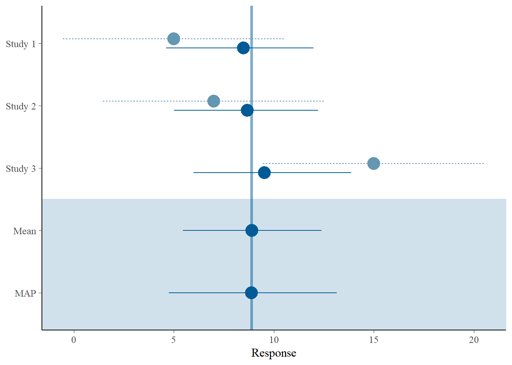
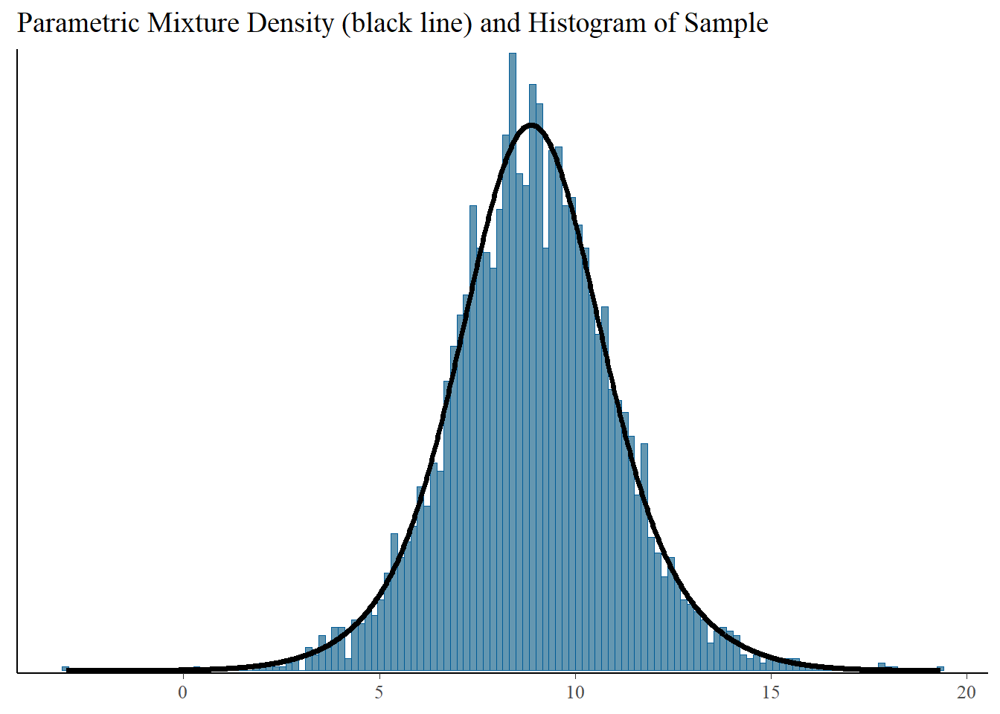

Code
library(RBesT)
dat <- data.frame(
study = c('Study 1','Study 2','Study 3'),
n = c(50,50,50),
y = c(5,7,15)
)
study_sigma <- 20 # set common SD
dat$y.se <- study_sigma / sqrt(dat$n)Clinical trials do not often occur out of thin air, oftentimes they are an evolution across multiple phases of research across many different populations. In many settings, we may have access to historic, supplemental, or external data that we could incorporate directly into our trial analysis beyond simply using them for a power calculation to motivate the target sample size. In this module we introduce Bayesian approaches to information sharing and discuss some of the strengths and challenges of implementing these approaches that may allow you to enroll fewer prospective participants and increase study power, albeit at a risk of increased bias in some scenarios.
You can also download the original PowerPoint file.
There has been a lot of recent growth in creating packages that make information sharing methods accessible. Some options include:
basket: implements asymmetric multi-source exchangeability models (MEMs) for basket trial designs where we wish to evaluate if pooling subgroups is possible based on exchangeability, restricted to binary outcomesRBesT: implements meta-analytic priors (MAPs) for information sharing across multiple outcome types, lots of vignettes to demonstrate how to use the packageBayesPPD: implements power priors and related methods for information sharingpsborrow: implements methods that combine propensity scores and Bayesian dynamic borrowing methodsRBesTThe following example builds from a homework assignment I used in an advanced clinical trials course. It focuses on RBesT and implementing MAPs for a hypothetical study.
For the MAP-related questions, we will assume we have three supplemental sources of data. Each source has \(n=50\) and \(\sigma=20\):
library(RBesT)
dat <- data.frame(
study = c('Study 1','Study 2','Study 3'),
n = c(50,50,50),
y = c(5,7,15)
)
study_sigma <- 20 # set common SD
dat$y.se <- study_sigma / sqrt(dat$n)One of the great things about RBesT package is that they’ve provided a wide range of possibilities to specify a prior on our between-study variance, denoted \(\sigma^2_{\eta}\) in our van Rosmalen reading (2018) or \(\tau\) in the RBesT package. This includes the default half-normal prior, but also truncated normal, uniform, gamma, inverse gamma, log-normal, truncated Cauchy, exponential, and fixed options!
For the purpose of this homework, we first want to fit the general MAP prior with 3 different half-normal specifications (\(\tau \sim HN(0,\sigma_{\tau})\)):
1. Prior \(\sigma_{\tau}\) of study_sigma / 2 = 10 (the prior used in the RBesT vignette for their example, stored in object map_mcmc_tauHN)
2. Prior \(\sigma_{\tau}\) of study_sigma x 10 = 200 (a larger prior value on the between-study variability, stored in object map_mcmc_tauHNv2)
3. Prior \(\sigma_{\tau}\) of study_sigma / 20 = 1 (a smaller prior value on the between-study variability, stored in object map_mcmc_tauHNv3)
### Derivation of MAP prior
## Half-normal tau prior with study_sigma/2
set.seed(1234) #set to ensure reproducibility of the MCMC estimate
map_mcmc_tauHN <- gMAP(cbind(y, y.se) ~ 1 | study,
weights=n,
data=dat,
family=gaussian,
beta.prior=cbind(0, study_sigma),
tau.dist="HalfNormal",
tau.prior=cbind(0,study_sigma/2))
print(map_mcmc_tauHN)Generalized Meta Analytic Predictive Prior Analysis
Call: gMAP(formula = cbind(y, y.se) ~ 1 | study, family = gaussian,
data = dat, weights = n, tau.dist = "HalfNormal", tau.prior = cbind(0,
study_sigma/2), beta.prior = cbind(0, study_sigma))
Exchangeability tau strata: 1
Prediction tau stratum : 1
Maximal Rhat : 1
Estimated reference scale : 20
Between-trial heterogeneity of tau prediction stratum
mean sd 2.5% 50% 97.5%
6.380 4.160 0.684 5.550 17.100
MAP Prior MCMC sample
mean sd 2.5% 50% 97.5%
8.53 9.22 -11.70 8.79 27.20 ## Half-normal tau prior with study_sigma*10
set.seed(1234) #set to ensure reproducibility of the MCMC estimate
map_mcmc_tauHNv2 <- gMAP(cbind(y, y.se) ~ 1 | study,
weights=n,
data=dat,
family=gaussian,
beta.prior=cbind(0, study_sigma),
tau.dist="HalfNormal",
tau.prior=cbind(0,study_sigma*10))
print(map_mcmc_tauHNv2)Generalized Meta Analytic Predictive Prior Analysis
Call: gMAP(formula = cbind(y, y.se) ~ 1 | study, family = gaussian,
data = dat, weights = n, tau.dist = "HalfNormal", tau.prior = cbind(0,
study_sigma * 10), beta.prior = cbind(0, study_sigma))
Exchangeability tau strata: 1
Prediction tau stratum : 1
Maximal Rhat : 1
Estimated reference scale : 20
Between-trial heterogeneity of tau prediction stratum
mean sd 2.5% 50% 97.5%
12.90 14.70 1.03 8.35 55.00
MAP Prior MCMC sample
mean sd 2.5% 50% 97.5%
7.63 20.60 -35.10 8.33 44.30 ## Half-normal tau prior with study_sigma/20
set.seed(1234) #set to ensure reproducibility of the MCMC estimate
map_mcmc_tauHNv3 <- gMAP(cbind(y, y.se) ~ 1 | study,
weights=n,
data=dat,
family=gaussian,
beta.prior=cbind(0, study_sigma),
tau.dist="HalfNormal",
tau.prior=cbind(0,study_sigma/20))
print(map_mcmc_tauHNv3)Generalized Meta Analytic Predictive Prior Analysis
Call: gMAP(formula = cbind(y, y.se) ~ 1 | study, family = gaussian,
data = dat, weights = n, tau.dist = "HalfNormal", tau.prior = cbind(0,
study_sigma/20), beta.prior = cbind(0, study_sigma))
Exchangeability tau strata: 1
Prediction tau stratum : 1
Maximal Rhat : 1
Estimated reference scale : 20
Between-trial heterogeneity of tau prediction stratum
mean sd 2.5% 50% 97.5%
0.948 0.672 0.040 0.834 2.460
MAP Prior MCMC sample
mean sd 2.5% 50% 97.5%
8.91 2.11 4.75 8.88 13.10 One helpful way to understand the data and the impact of the MAP prior is to graph it. The RBesT package include forest plots that are easy to create from our gMAP objects saved above. Note: the default is the lighter blue dashed line is the original data, the dark blue solid line is the MAP estimate.
## Plot forest plots
print( plot(map_mcmc_tauHN)$forest_model )
print( plot(map_mcmc_tauHNv2)$forest_model )print( plot(map_mcmc_tauHNv3)$forest_model )
The gMAP objects that were estimated given our different priors above were estimated using the MCMC chains fit with rstan. However, to apply these estimates in the process of estimating our trial performance we need to approximate the MAP in some (parametric) way. Within RBesT we can achieve this by using the automixfit function, which takes our MCMC output for the object and uses an expectation-maximization (EM) algorithm to estimate a parametric mixture of different components.
We can also note that RBesT includes a function to visualize the mixtures:
## Approximation of MAP Prior using a mixture distribution
map <- automixfit(map_mcmc_tauHN)
mapv2 <- automixfit(map_mcmc_tauHNv2)
mapv3 <- automixfit(map_mcmc_tauHNv3)
print(map)EM for Normal Mixture Model
Log-Likelihood = -14041.76
Univariate normal mixture
Reference scale: 20
Mixture Components:
comp1 comp2 comp3
w 0.4884107 0.4625307 0.0490586
m 8.9697909 8.3180233 6.0787268
s 3.7118243 10.3381879 24.0664794print(mapv2)EM for Normal Mixture Model
Log-Likelihood = -16253.76
Univariate normal mixture
Reference scale: 20
Mixture Components:
comp1 comp2 comp3 comp4
w 0.38367072 0.33720288 0.23881644 0.04030997
m 8.51390751 8.48768978 6.97075811 -4.13223612
s 4.28683959 10.91393632 25.08149588 73.81527800print(mapv3)EM for Normal Mixture Model
Log-Likelihood = -8626.03
Univariate normal mixture
Reference scale: 20
Mixture Components:
comp1 comp2
w 0.5375988 0.4624012
m 8.8567284 8.9741893
s 1.5686685 2.6002141# Check accuracy of mixture fits
plot(map)$mix
plot(mapv2)$mixplot(mapv3)$mix
As our final stop in comparing the performance of different prior specifications on \(\tau\) we can examine the resulting effective sample size that would be imparted by the differing choices of our prior. Interestingly, there are multiple methods one can use in calculating the contribution of a given prior. The RBesT package has the functionlity to estimate three: elir, moment, or morita. The elir method is the expected local information ratio proposed by Neuenschwander et al. in a paper under review and is the default method. The method approaches utilizes the mean and SD of the mixture which are then approximated by conjugate distributions with the same mean and SD. Finally, morita is a method proposed by Morita that utilizes the mode instead of the mean.
## Effective Sample Size (ESS)
round(ess(map)) #default elir method[1] 10round(ess(mapv2)) #default elir method[1] 5round(ess(mapv3)) #default elir method[1] 95Below are some references to highlight based on the slides and code:
FDA Adaptive Design Clinical Trials for Drugs and Biologics Guidance for Industry Guidance Document: FDA guidance document on adaptive trial elements
A practical guide to adopting Bayesian analyses in clinical research: 2024 tutorial paper exploring the Bayesian approach to statistics and how to apply the methods for clinical trials